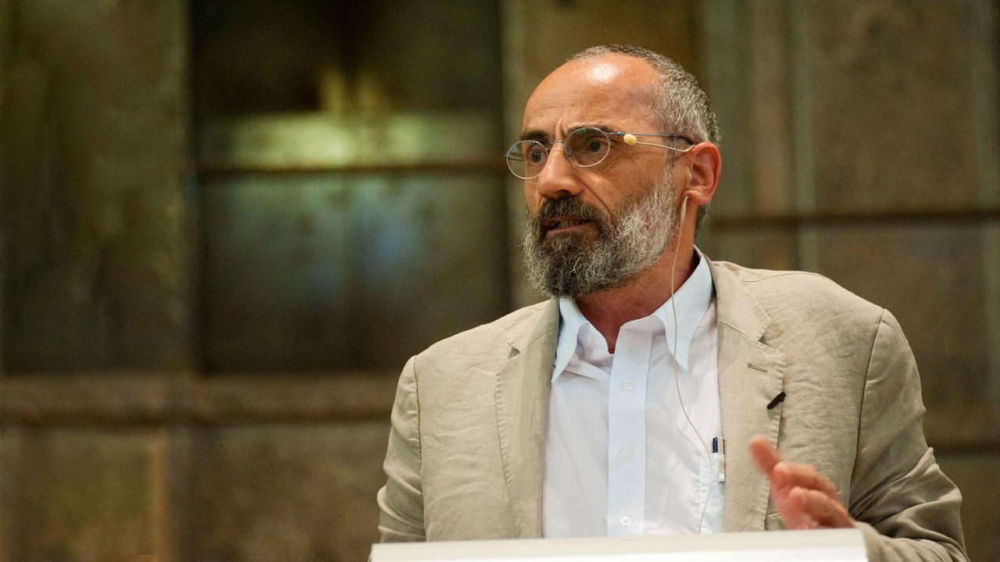

1:16:20 · 2 OPERE
Updates from Israel with Chaim Noll.
Il filo del discorso
La conversazione in inglese fra Dr Divago e Chaim Noll collega il confronto militare con l’Iran alla politica interna israeliana, ai rapporti con l’Europa e alla condizione degli ebrei nelle società occidentali. Noll interviene da Israele e mescola valutazioni geopolitiche con ricordi e osservazioni della propria vita quotidiana.
Leggi la sintesi completaRiduci la sintesi
Gli indizi interni rimandano al 2025, dopo il conflitto diretto di giugno con l’Iran e prima delle elezioni municipali di novembre a New York; il riferimento alla crisi dei partiti ultraortodossi è compatibile con metà luglio. La data esatta della registrazione non è pronunciata e non viene ricavata come certezza dalla successione delle notizie. In apertura Noll distingue la popolarità che attribuisce all’azione contro l’Iran dalla fragilità della coalizione di Netanyahu. Il punto critico è il servizio militare dei giovani ultraortodossi: l’eventuale uscita di un partito dal governo non implica automaticamente lo scioglimento della Knesset o l’impossibilità di un sostegno esterno. La domanda di Dr Divago sulla durata della guerra porta poi a una lettura più ampia dell’ostilità iraniana. Noll propone due spiegazioni, una ideologica e una strategica, e attribuisce alla Cina un ruolo decisivo nel sostegno all’Iran. La trasformazione di questa relazione economica in una regia cinese di specifici attacchi resta però una sua interpretazione, non un fatto provato dagli elementi presentati. La competizione fra vie commerciali diventa uno dei nuclei del colloquio. Noll contrappone la Belt and Road al corridoio India–Medio Oriente–Europa. Quest’ultimo fu annunciato al G20 di Nuova Delhi nel settembre 2023, non a un G7; il memorandum distingue due corridoi e prevede collegamenti marittimi e ferroviari. La vicinanza temporale con il 7 ottobre non dimostra da sola un rapporto causale con l’attacco di Hamas. I giudizi sulle intenzioni dei governi iraniano e cinese e sull’efficacia dell’azione israeliana vengono quindi conservati come valutazioni degli interlocutori, distinguendo popolazioni, governi e organizzazioni armate. Il confronto si sposta sui governi europei, sulle minoranze musulmane e sull’integrazione. Noll ritiene che una società sicura dei propri valori e capace di far rispettare le leggi sia più attrattiva; adduce come esempi la partecipazione economica degli arabi israeliani e la vicinanza di cittadini beduini colpiti da Hamas il 7 ottobre. Richiama anche episodi vissuti in ospedale e sulle strade. Questi racconti non costituiscono un’indagine rappresentativa e non autorizzano a descrivere comportamenti criminali o ostilità come proprietà di un’intera religione. Anche i numeri richiedono categorie coerenti: il dato israeliano sui musulmani era vicino a 1,8 milioni, mentre ebrei, altri residenti, arabi e stranieri sono aggregati diversi nelle statistiche ufficiali. Il ricorso ai tribunali religiosi in materie di stato personale non equivale a una sovranità penale autonoma delle città arabe. Il ricordo di una casa cercata come luogo tranquillo introduce un momento diverso. Noll parla del rumore, della vicinanza a Gaza e dei timori per polveri e macerie. La valutazione UNEP del giugno 2024 stimava 39 milioni di tonnellate di detriti e segnalava rischi da amianto e altri contaminanti. È un dato datato, non la misura aggiornata al momento del colloquio; non dimostra inoltre la concentrazione di sostanze che Noll respira nel luogo in cui abita. La devastazione e le conseguenze ambientali per i civili di Gaza rimangono parte del contesto, mentre l’esperienza individuale viene distinta da una misurazione sanitaria o ambientale. La seconda parte è dominata dall’antisemitismo, dal dibattito universitario e dalla responsabilità pubblica. Gli interlocutori denunciano minacce contro gli ebrei e criticano la risposta di istituzioni e media; Dr Divago richiama un proprio documentario, un episodio ristorativo a Napoli e l’audizione dei vertici di Harvard, Penn e MIT. La condanna di minacce e discriminazioni non implica che ogni critica al governo israeliano o ogni manifestazione per i palestinesi abbia lo stesso contenuto. Le responsabilità vanno riferite a dichiarazioni e azioni specifiche, senza attribuire agli ebrei della diaspora la condotta di uno Stato o ai musulmani europei le decisioni di gruppi armati. Le espressioni come psicosi, isteria e follia descrivono il loro giudizio polemico, non condizioni cliniche accertate. Un libro offre l’unico richiamo bibliografico sufficientemente riconoscibile: L’argent nazi à la conquête de la presse française di Pierre-Marie Dioudonnat, pubblicato nel 1981 e dedicato al periodo 1940–1944. L’indicazione degli anni Settanta nel parlato è imprecisa. L’analogia con la stampa contemporanea è un argomento di Dr Divago: un’indagine sul finanziamento della stampa durante l’occupazione non prova un sistema attuale di pagamenti. Analogamente, le accuse di corruzione rivolte alle università non vengono convertite in reati accertati. La donazione a Bar-Ilan trova un riscontro istituzionale per 260 milioni di dollari da un anonimo ex studente della Columbia; la fonte universitaria non conferma il racconto di una somma sottratta a un ateneo californiano come reazione alla sua condotta. L’ultima parte torna al ruolo della conoscenza. Dr Divago teme l’elezione di Zohran Mamdani a New York, ancora prospettata come futura; Noll insiste sulla possibilità di scegliere altri luoghi per vivere o studiare. Il giudizio politico sul candidato e la caratterizzazione delle sue promesse restano distinti da una verifica del programma o da una previsione clinica della sua condotta. I due convergono sulla necessità di difendere scuola, ricerca e capacità tecnologica. Noll interpreta la protezione sperimentata durante gli attacchi iraniani come prova della forza di queste risorse. I conteggi governativi del giugno 2025 distinguono però circa 550 missili da oltre mille droni, e non corroborano la formula di migliaia di soli missili balistici; i racconti su scorte esaurite, vecchi aerei e percentuali d’intercettazione richiedono fonti e denominatori specifici. Il colloquio si chiude con una speranza nella conoscenza come protezione della vita e della pace, espressa dalla prospettiva dichiarata dei suoi partecipanti.
I libri nel discorso

Chaim Noll zum Israel-Iran-Konflikt
Identificazione probabile
Note sul riferimento
Fotografia editoriale ufficiale della scheda 3sat, non fotogramma certificato dell’intervista: 3sat / Kulturzeit, fotografia editoriale della scheda Chaim Noll zum Israel-Iran-Konflikt, 17 giugno 2025
Fotografia pubblicata nella scheda dell’intervista. Non è certificata come fotogramma della registrazione o come fotografia scattata il 17 giugno 2025. L’identità dell’intervistato deriva dalla scheda editoriale e dal richiamo verbale, non dal riconoscimento del volto. Nessuna visione o ascolto del filmato esterno dichiarati.
Nel passaggio: intervista a canale tedesco reso automaticamente Sat Free, con Noll e domande sulla situazione in Israele e la resistenza politica al conflitto. Titolo e giorno assenti. La scheda ufficiale 3sat del 17 giugno 2025 identifica un’intervista di Kulturzeit con lo stesso ospite e tema.

L’argent nazi à la conquête de la presse française
Identificazione probabile
Note sul riferimento
Copertina: Jean Picollec, 1981, periodo trattato 1940–1944
Riferimento ricavato dalla trascrizione automatica.